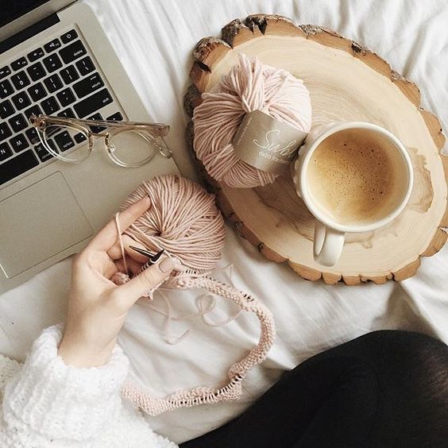
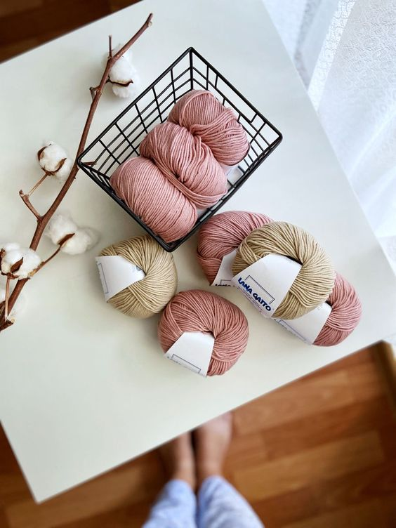
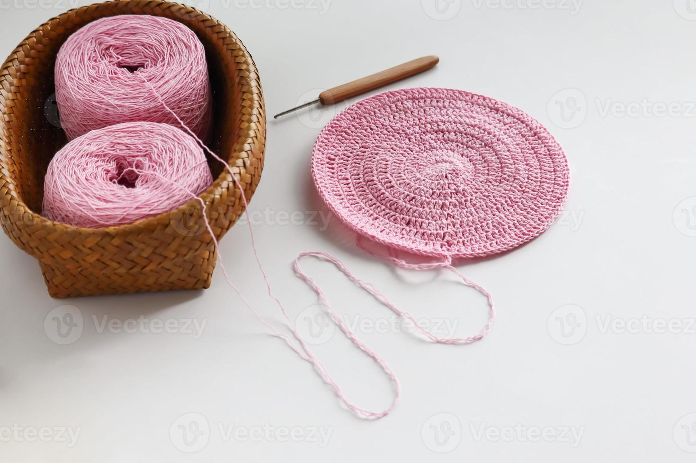

Nossa História
A Jasmine Crochê nasceu oficialmente em Janeiro de 2020, onde pude transfomar algo terapeutico em um empreendimento, sendo meu maior objetivo trazer valorização ao handmade e o tempo que artesãs usam para dedicar ao crochê para peças únicas
Nossa Missão
"A nossa missão é promover a arte do crochê, oferecendo produtos de alta qualidade e inspirando criatividade em todos os nossos clientes. Queremos ser reconhecidos como um destino confiável para os entusiastas do crochê, fornecendo materiais e recursos excepcionais para apoiar suas paixões."
Nossos Valores
"Nosso objetivo é ser a principal referência no mundo do crochê, ampliando nossa presença tanto online quanto offline. Queremos ser conhecidos não apenas pela qualidade dos nossos produtos, mas também pelo nosso compromisso com a comunidade de crochê, proporcionando um espaço onde os talentos sejam valorizados e as ideias sejam compartilhadas."
